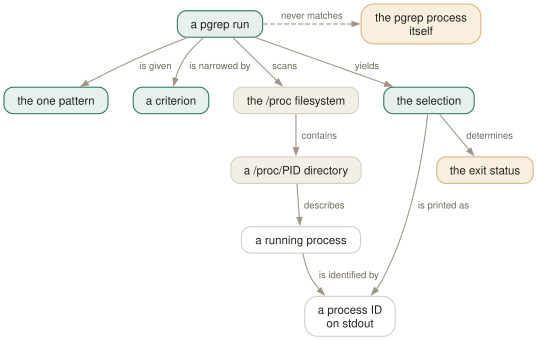

Day 01
The selection model
Query the process table, and read the answer honestly.
By the end of today you can
- explain why
pgrep sshdis a different kind of operation fromps aux | grep sshd - predict whether a set of criteria will be combined with AND or with OR
- use pgrep's exit status in a shell conditional without being caught by
-c
It is a query, not a search
pgrep is not grep for processes. It is a query over the process table, in which the text pattern is one predicate among a dozen, and the answer comes back as process IDs rather than as lines you have to parse again. Once you see it that way, the whole option list stops being arbitrary.
The mechanism is unglamorous. pgrep walks /proc, reads the numbered directories the kernel publishes there, and for each one decides whether every criterion you supplied holds. The survivors are printed, one PID per line, in ascending numeric order. That is the whole program.
What makes this different from ps aux | grep sshd is that the comparison happens against fields, not against a rendering. ps formats the table into text and grep then matches that text, which is why the grep finds itself, why a username that happens to appear in someone's command line counts as a match, and why you end up with awk '{print $2}' bolted on the end to recover the number you actually wanted.

-c ends up in a conditional where it does not belong.All of the criteria, any of the values
There are two combining rules and they operate at different levels. Get them the wrong way round and you will write queries that quietly return the wrong set.
- Between criteria: AND
- Every option you add narrows the result.
pgrep -u root sshdmeans owned by root and named sshd. There is no way to spell OR across two different criteria, and no plans to add one. - Within one criterion: OR
- The criteria that take a list accept commas, and a comma means "any of".
pgrep -u root,daemonmeans owned by root or by daemon. Note that this example has no pattern at all — perfectly legal.
$ pgrep -l -u root systemd # root AND matching /systemd/
1 systemd
832 systemd-journal
864 systemd-userdbd
877 systemd-udevd
1228 systemd-machine
1273 systemd-logind
$ pgrep -l -u root,jhrcek systemd # (root OR jhrcek) AND matching /systemd/
1 systemd
832 systemd-journal
864 systemd-userdbd
877 systemd-udevd
1228 systemd-machine
1273 systemd-logind
4844 systemd # the per-user instance, mine
The answer leaves by two doors
A pgrep run produces a list on stdout and an exit status, and the two are independent. The statuses are worth learning properly because they are how pgrep is used in anger:
0- One or more processes matched.
1- Nothing matched. Not an error — the commonest outcome in a health check.
2- You made a syntax error: an unknown option, two patterns, an invalid username.
3- Fatal — out of memory and similar. You will not see this.
$ pgrep systemd cron
pgrep: only one pattern can be provided
Try `pgrep --help' for more information.
$ pgrep
pgrep: no matching criteria specified
Try `pgrep --help' for more information.
For a script that only wants the yes/no, ask for silence. --quiet prints nothing whatsoever and leaves only the status behind:
$ if pgrep --quiet pipewire; then echo up; else echo down; fi
up
The trap in the other direction is -c. It suppresses the PIDs and prints a count, but the count is a number on stdout, not a status:
$ pgrep -c notrunning
0
$ echo $?
1
So if pgrep -c x; then does the right thing for the wrong reason, and pollutes the log with a stray 0 on every run. Reach for --quiet when you want the branch and -c when you want the number.
Two rules about the pattern, before we get to the pattern
Tomorrow is entirely about what the pattern matches against. Today only needs two structural facts, both of which produce exit status 2 when violated.
- At most one pattern.
pgrep systemd cronis not "either of these"; it isonly one pattern can be provided, exit2. If you want either, write it as one ERE:pgrep 'systemd|cron'. - At least one criterion. Bare
pgrepisno matching criteria specified. A pattern counts as a criterion, and so does-u rooton its own, but you cannot ask for nothing.
Today's habit
Retire ps aux | grep for one day. Every time your fingers start it, type pgrep -a instead and see how far it gets you. Some of the time it will not be enough yet, and those are precisely the cases the next three days cover.
Start a file — ~/pgrep-recipes.sh will do — and put today's one line in it with a comment saying what it is for. This course has no config file to build, because pgrep has no configuration of any kind; the recipes file is what you accumulate instead, and by Day 9 it is the artefact worth keeping.
# ~/pgrep-recipes.sh - queries I have needed, with the reason
#
# Day 1: is it running at all? Status only, nothing on stdout.
pgrep --quiet postgres
New vocabulary
Commands
| Command | Does |
|---|---|
pgrep sshd | List the PID of every process whose name matches the ERE sshd. |
pgrep -u root sshd | Two criteria, AND-ed: owned by root and named sshd. |
pgrep -u root,daemon | One criterion, OR-ed: owned by root or by daemon. No pattern at all. |
pgrep 'systemd|cron' | One ERE, two alternatives. Two bare patterns would be an error. |
pgrep --version | Print the procps-ng version this course is checked against. |
Options
| Option | Does |
|---|---|
-c, --count | Print how many processes matched instead of their PIDs. |
--quiet | Print nothing; the exit status is the whole answer. Long form only. |
Drillsdo these in a real terminal, today
Self-check
Answer out loud first, then unfold.
You run pgrep -u root -G audio firefox and get nothing, although a root-owned firefox is clearly running. What is the most likely reason?
Every criterion has to hold at once. You asked for a process that is simultaneously owned by root, has audio as its real group, and is named firefox. The first two are independent facts about the same process, and both must be true — narrowing is AND, always.
The only OR in pgrep lives inside one criterion, as a comma list: -u root,jhrcek means either user. There is no way to write "root-owned or audio-grouped" in a single invocation, and that is deliberate — see Day 5 for what happens when you reach for -v to fake it.
Why does ps aux | grep sshd almost always show one more line than there are sshd processes?
Because grep sshd is itself a running process with sshd in its command line, and ps snapshots the table at a moment when the grep already exists. You are matching against a rendering of the process table, so anything that mentions the string qualifies — including the tool doing the mentioning.
pgrep matches against the fields themselves and, by explicit rule, never reports itself. It still reports its parent, which is the subject of tomorrow.
A colleague's health-check script has if pgrep -c myservice; then echo up; fi and it reports "up" even when the service is stopped. Why?
It does not. It reports nothing at all when the service is stopped, and "up" when it is running — but it also prints a bare 0 or 3 into the log every time it runs, because -c writes the count to stdout. The count and the exit status are separate channels: with no matches pgrep prints 0 and exits 1.
The shape that works is if pgrep --quiet myservice. Note that --quiet has no short form in pgrep — -q is --queue in pkill, and pgrep rejects it outright.
You want every process owned by root or by www-data whose name contains nginx. You write pgrep -u root -u www-data nginx. What do you get?
Only www-data's processes. A repeated option does not accumulate — the second -u replaces the first, so you asked for "owned by www-data and named nginx". No error, no warning, and the answer looks plausible, which is what makes it expensive.
The comma list is the accumulator: pgrep -u root,www-data nginx.
Cheat sheet
pgrep NAME # PIDs of processes whose name matches the ERE
pgrep -u root NAME # criteria are AND-ed: root AND named NAME
pgrep -u root,daemon # values are OR-ed: root OR daemon. No pattern needed.
pgrep -u root -u daemon # WRONG: the second -u replaces the first
pgrep -c NAME # print the count instead of the PIDs
pgrep --quiet NAME # print nothing; the exit status is the answer (no -q!)
#
# exit 0 = matched 1 = no match 2 = your syntax 3 = fatal
# 'pgrep -c x' prints 0 and exits 1 when nothing matches - two channels.
Everything through Day 01
Commands
| Command | Does |
|---|---|
pgrep sshd | List the PID of every process whose name matches the ERE sshd. |
pgrep -u root sshd | Two criteria, AND-ed: owned by root and named sshd. |
pgrep -u root,daemon | One criterion, OR-ed: owned by root or by daemon. No pattern at all. |
pgrep 'systemd|cron' | One ERE, two alternatives. Two bare patterns would be an error. |
pgrep --version | Print the procps-ng version this course is checked against. |
Options
| Option | Does |
|---|---|
-c, --count | Print how many processes matched instead of their PIDs. |
--quiet | Print nothing; the exit status is the whole answer. Long form only. |